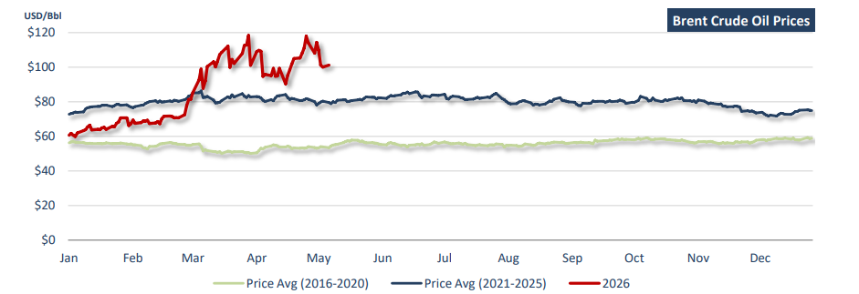

On this week last year, Doric’s Weekly Insight examined the internal dynamics of OPEC+ through the lens of game theory, emphasizing Saudi Arabia’s role as the cartel’s dominant player within an increasingly fragmented producer alliance. At the time, the market’s primary challenge was not supply insecurity but rather the opposite: managing an emerging surplus against a backdrop of weakening macroeconomic sentiment. Crude prices had been under sustained pressure, declining more than 20 percent since mid-January as sluggish Chinese demand, tighter financial conditions, and rising geopolitical fragmentation weighed on consumption expectations. At the same time, US President Donald Trump’s renewed pro-drilling agenda, coupled with escalating US-China trade tensions, reinforced expectations of stronger non-OPEC supply growth. Against this backdrop, OPEC+ had opted to continue gradually unwinding voluntary production cuts, including an accelerated output increase for June, despite mounting concerns that the move could further destabilize an already fragile market balance. Brent had briefly fallen to multi-year lows of $58.50 per barrel, while WTI dropped below $56, as traders increasingly questioned both the durability of demand recovery and the cartel’s ability to enforce discipline amid persistent quota under-compliance from members such as Iraq and Kazakhstan. In essence, last year’s market was defined by abundance: ample supply, soft demand, and a producer group struggling to maintain price stability through coordinated restraint.
Twelve months later, the market narrative has undergone a nearcomplete inversion. Rather than debating the optimal pace of unwinding voluntary cuts or the extent of quota compliance, market participants are once again confronting a more familiar and far less manageable variable: geopolitical disruption. So far in 2026, the oil market has been dominated by the escalation of the Middle East crisis, triggering what the International Energy Agency described as the largest supply disruption in history. Brent crude began the year near the low-$70s per barrel, supported by expectations of modest global demand growth and continued OPEC+ restraint. By late February, as tensions between the US, Israel, and Iran intensified, Brent moved above $75 before surging sharply in March into the $90-100 range amid fears of prolonged export disruptions. April marked the most aggressive leg higher, with physical crude premiums widening materially and Brent briefly testing the $115- 120 range as Gulf loadings slowed, insurance premiums spiked, and tanker delays intensified. In response, OPEC+ maintained its measured approach, proceeding with a modest 206,000 barrels per day production increase for May, followed by an additional 188,000 barrels per day increase for June. Yet these decisions were largely symbolic, as logistical constraints and transportation risk became far more important than incremental supply additions. The tanker market experienced an even more pronounced repricing. VLCC earnings on Middle East export routes surged multiples above seasonal norms as rerouting, delays, war-risk premiums, and vessel scarcity tightened effective vessel supply.
The contrast with last year is striking. In 2025, oil markets were preoccupied with oversupply risks, demand fragility, and internal cartel discipline. In 2026, these concerns have been abruptly superseded by a classic geopolitical oil shock, reminding market participants that while producer strategy may shape equilibrium, geopolitical instability can instantly redefine it.
In parallel, the global iron ore market presents a different strategic story – one shaped by an oligopoly of suppliers and a dominant monopsonist buyer: China. Building on last year’s framework, Doric’s Weekly Insight highlighted how iron ore differs structurally from oil, with pricing power distributed between a concentrated supply base and a single dominant demand centre accounting for more than 70 percent of global seaborne imports. On this week last year, the focus was firmly on Chinese steel policy. Prices had remained rangebound between $96 and $110 per tonne as Beijing’s renewed efforts to cap crude steel output weighed on sentiment. The policy objective was dual in nature: to restore profitability in an oversupplied steel sector while advancing environmental targets linked to emissions reduction. Although monetary easing measures, including a PBOC rate cut, briefly supported sentiment, the impact proved fleeting as traders remained cautious amid soft downstream steel demand, persistent weakness in the property sector, and fragile global trade conditions.
Twelve months later, the centre of gravity has shifted. While China remains the decisive force on the demand side, the balance of risk has increasingly migrated toward supply. So far in 2026, iron ore prices have demonstrated notable resilience despite ongoing structural headwinds in Chinese real estate and broader industrial activity. Unlike oil, where geopolitical shocks have dominated pricing, iron ore has instead faced a slower-moving but equally important structural shift: a transition from a relatively tight seaborne balance to one increasingly shaped by expanding supply availability.
Iron ore futures began the year supported above the $100 per tonne threshold, underpinned by stronger-than-expected hot metal production, resilient steel margins, and seasonal restocking. However, as the year progressed into the second quarter, global supply growth began to assert itself more clearly. Australian exports recovered strongly following earlier weather disruptions, with Pilbara operations normalizing and major miners including Rio Tinto, BHP, and FMG reporting robust shipment volumes. More significantly, Brazilian exports rebounded sharply, while Indian shipments also increased as Chinese buyers restocked ahead of seasonal demand peaks. At the same time, inventories at major Chinese ports remain elevated, underscoring a structurally more comfortable supply environment. Imported iron ore stocks tracked by Mysteel stood above 172 million tonnes in early May, materially higher than year-ago levels. Looking further ahead, attention is increasingly shifting toward the medium-term implications of new Atlantic supply, particularly the anticipated ramp-up from Simandou, which is expected to materially reshape the seaborne balance over the coming years.
Whether in oil or iron ore, commodity markets are ultimately more than reflections of supply and demand fundamentals; they are structured arenas where concentrated market power, policy intervention, and exogenous shocks interact to redefine equilibrium. For shipping, these dynamics are not abstract but immediate. The sector sits directly at the intersection of commodity flow and geopolitical risk, continuously absorbing shifts in tonne-mile demand, trade routing, and logistical friction. In both markets, the past twelve months have underscored a common lesson: stability is conditional, not structural. In oil, geopolitical risk has reasserted itself as the dominant pricing force; in iron ore, incremental supply growth is steadily reshaping medium-term balance. For shipping, the implication is clear. Any periods of dislocation, whether driven by conflict or capacity cycles, ultimately define earnings, sentiment, and strategic positioning across the freight complex.

Data source:Doric